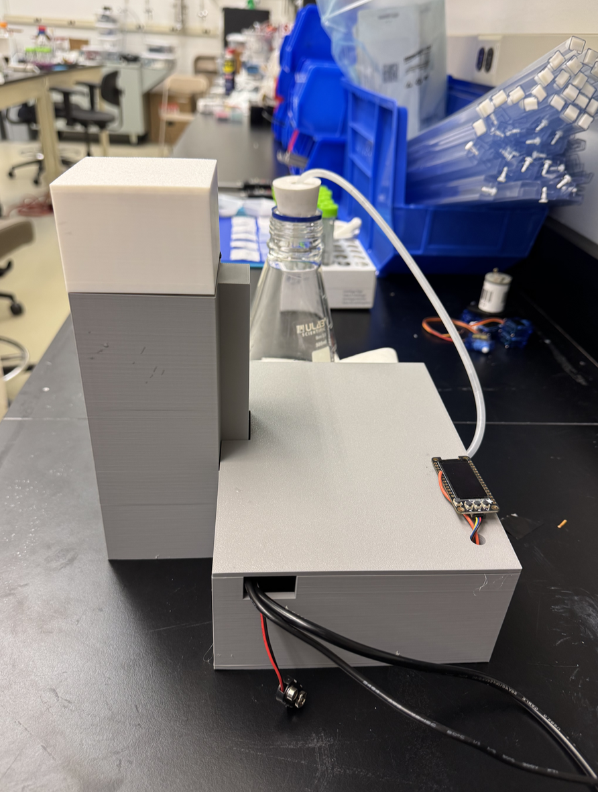
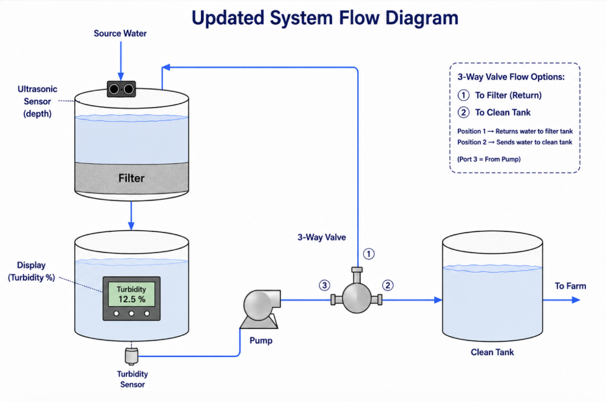
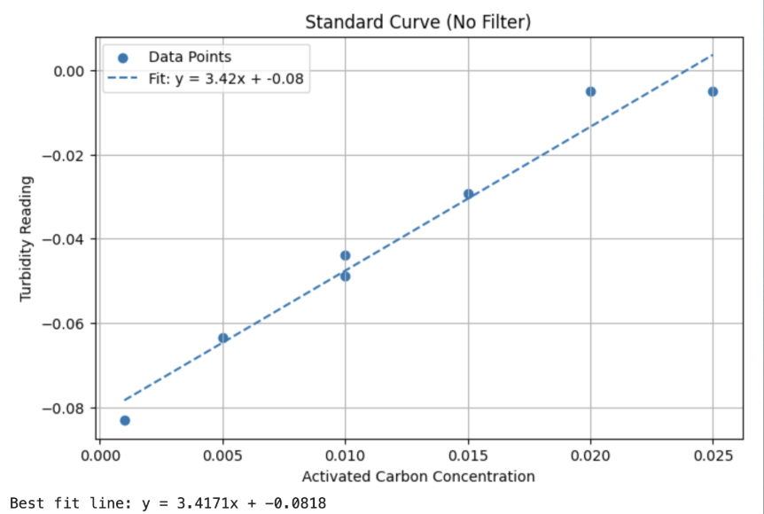

1) Executive Summary
Water Works™ is an adaptive water purification prototype designed for irrigation systems that rely on variable-quality surface water. Drip and micro-irrigation systems are efficient, but they are highly sensitive to suspended particles. When turbidity rises, small emitters can clog, flow can become uneven, and operators may face more downtime and maintenance.
Most filtration systems run at a fixed setting, even when water quality changes throughout the day or after storms. Our system uses a turbidity sensor to monitor water clarity and sends water through a filter repeatedly until the water approaches a target clean-water reading. Once the water is sufficiently filtered, the system can redirect flow toward the clean-water output instead of continuing unnecessary filtration.
The final prototype combines a low-pressure peristaltic pump, an Arduino-based sensing and control circuit, a 20 µm filter, activated carbon testing, ultrasonic overflow sensing, a display screen for live user feedback, and a housing designed to consolidate the major hardware into a more self-contained device.
Final System Design

Final Water Works™ prototype design showing the integrated system layout.
Target application
Drip and micro-irrigation systems using surface water, runoff, ponds, rivers, or other variable-quality water sources.
Final filter direction
~20 µm coffee filter selected as the best balance between particle capture and usable flow with a low-pressure pump.
Final test contaminant
Activated carbon, selected because it produced a stronger, darker signal and clearer measurable filtration behavior than diatomaceous earth.
Main result
Activated carbon removal was measurable, with most improvement occurring in the first 2–3 filtration passes.
2) Problem Definition and Market Need
Irrigation water quality is not constant. Surface water sources such as rivers, ponds, canals, and stormwater runoff can contain suspended solids, organic material, and sediment levels that change quickly after rainfall, erosion, or seasonal shifts. For drip and micro-irrigation, this is a serious issue because the water is delivered through small emitters that can clog when suspended particles enter the system.
Problem
High turbidity can clog emitters, reduce uniform water distribution, increase maintenance, and create downtime during critical irrigation periods.
Why fixed filtration is limited
Static filters are often designed for worst-case water quality. This can lead to unnecessary pressure drop, wasted energy, more cleaning, and over-filtration when the source water is already relatively clean.
Stakeholders
Farmers, greenhouse operators, irrigation installers, precision agriculture companies, and equipment distributors all benefit from more reliable water delivery and lower maintenance burden.
Design objective
Create a compact adaptive filtration unit that can monitor water clarity, continue filtering while needed, and stop or redirect water once the treated batch is sufficiently clean.
3) Market Research and Competitive Positioning
The project targets the drip irrigation market because drip systems are efficient but vulnerable to clogging. The global drip irrigation market is estimated around $6 billion and is expected to grow as water scarcity, precision agriculture, and automation increase demand for controlled irrigation systems.
| Existing Solution | Example | Main Limitation | Water Works™ Advantage |
|---|---|---|---|
| Screen filters | Netafim-style irrigation filters | Fixed filtration level; can clog under variable sediment loads | Uses turbidity sensing to determine when more filtration is needed |
| Sand filters | Agricultural media filtration | High maintenance and cleaning burden | Targets smaller-scale adaptive pre-treatment before clogging becomes severe |
| Disk filters | Rain Bird-style disk systems | Still operates as a static filtration barrier | Adds feedback control and real-time decision-making |
| Chemical treatment | Injection systems | Added operating cost and chemical handling | Focuses on physical particle removal without chemical addition |
Target entry market
- Farms using drip or micro-irrigation
- Operations using surface water sources
- High-value crops where irrigation reliability matters
- Precision agriculture users already familiar with sensors and automation
Pricing and go-to-market
- Small-scale prototype target: ~$200–300
- Scaled commercial unit target: ~$2,000
- Sell through irrigation distributors and system installers
- Use pilot programs to validate maintenance savings and reliability
4) Final System Design and Flow
The final Water Works™ design uses a semi-batch adaptive filtration loop. Source water enters the system, passes through the filter, is measured by the turbidity sensor, and is either recirculated for another filtration pass or sent toward the clean-water output once the target clarity condition is met.
Updated System Flow Diagram

Final system flow showing source water, filtration, turbidity sensing, pump control, valve logic, recirculation, and clean-water output.
Operating Sequence
- 1.Fill: Source water enters the treatment chamber or filter section.
- 2.Filter: The pump drives water through the 20 µm filter.
- 3.Measure: The turbidity sensor reads the filtered water clarity.
- 4.Decide: Arduino compares the reading to a threshold or clean-water baseline.
- 5.Recirculate or transfer: If still turbid, water is sent through another pass. If clean enough, it moves toward the clean output path.
- 6.Display: The screen shows live turbidity/system status so the user can monitor progress.
- 7.Safety: The ultrasonic sensor detects high water level or overflow/clogging risk.
5) Circuit Design and Control Logic
The circuit is built around an Arduino-style microcontroller. The turbidity sensor provides the main process signal, while the ultrasonic sensor adds a safety measurement for water level. The pump and valve logic are controlled based on the sensor readings, and the display gives the user real-time system feedback.
Final Circuit Diagram

Final circuit layout showing the Arduino, turbidity sensor, ultrasonic sensor, relay, pump, display screen, and power supply.
Microcontroller
Reads sensor values, compares turbidity to the threshold, controls pump/valve states, and sends values to the display.
Turbidity Sensor
Uses an LED and phototransistor/photoresistor-style detector to estimate clarity from transmitted light intensity.
Ultrasonic Sensor
Measures water level above the filter or tank to identify overflow or clogging conditions.
Relay / Pump
The relay safely switches the higher-power pump from low-voltage Arduino control logic.
Display Screen
Shows real-time turbidity readings and system status, making the prototype easier to understand and operate.
Control Logic
Dirty water triggers continued recirculation. Cleaner water triggers output/stop behavior, depending on the final valve path.
6) Final Materials and Cost Breakdown
The final prototype was designed to stay low-cost and buildable with accessible components. Many components are standard Arduino-compatible parts, and the housing/valve pieces are designed for 3D printing.
| Component | Purpose | Approx. Cost |
|---|---|---|
| 3D printed pinch valve | Redirects tubing path for recirculation/output control | Included in PLA / print cost |
| Servo motor | Actuates valve movement | $8 |
| Tubing | Connects source, pump, filter, sensor, and clean output | $3.50 |
| Ultrasonic sensor | Detects water level / overflow risk | $4 |
| Peristaltic pump | Drives recirculation and filtration flow | $25 |
| Display screen | Shows live turbidity and system status | $10 |
| PLA | Housing, supports, and printed structural pieces | $5 |
| Power supply | Provides required voltage to pump/control system | $7 |
| Microcontroller | Arduino/control board | $20 |
| Relay module | Switches pump safely | $7 |
| Filters | 20 µm filtration media and test filters | $10 |
| Turbidity sensor | LED + detector clarity measurement | $1.50 |
| Total | Approximate prototype cost | $101 |
7) Chemical Engineering Principles
The final design applies core chemical engineering concepts including particle separation, filter pore size selection, cake filtration, optical sensing, pressure drop, and feedback control.
Filtration and Particle Removal
The filter removes suspended solids through size exclusion and interception. Particles larger than the effective pore size are physically retained, while smaller particles may pass through unless captured by the developing cake layer.
Filter Pore Size Tradeoff
Smaller pores improve particle capture but increase flow resistance. Testing showed that very fine filters can stop flow entirely at low pressure, while coarse filters allow too many particles through.
Cake Filtration
As particles build up on the filter surface, the deposited layer acts as a secondary filter. This explains why repeated passes can improve turbidity reduction even when the original filter pore size is not extremely small.
Darcy’s Law and Pressure Drop
Flow through the filter depends on pressure drop, filter permeability, viscosity, and thickness. As the filter becomes finer or more clogged, resistance increases and flow rate decreases.
Optical Turbidity Sensing
Suspended particles scatter and absorb light. More turbid water transmits less light to the detector, while cleaner water produces a reading closer to the clean-water baseline.
Feedback Control
The system uses turbidity as the controlled variable. The Arduino compares each reading to a threshold and determines whether to keep filtering or stop/transfer the water.
8) Design Process and Major Iterations
Early Prototype
The project began with a simple turbidity sensor and Arduino feedback loop. The first working system measured water clarity, interpreted the reading, and controlled a pump based on a threshold. This proved that a low-cost optical sensor could detect meaningful clarity changes and that pump control could be automated.
Early Turbidity Sensor

Early turbidity sensor used to test the first optical clarity measurements.
Housing Phase 1

Initial housing concept from the design process.
Housing Phase 2

Intermediate housing design used before the final integrated version.
Filter Selection
Filter testing began with diatomaceous earth as a model sediment. Large meshes around 100–150 µm produced little to no removal, while very fine filters around 2–5 µm blocked flow at the low pressure available from the pump. The 20 µm coffee filter became the final selection because it captured a meaningful portion of particles while still maintaining usable flow.
Final Housing
The housing evolved from an initial loose setup into a more integrated structure. Later designs focused on supporting the filter, pump, tubing, sensors, and electronics in one contained system while improving flow routing and usability.
Final Housing

Final housing used to organize the pump, tubing, filter, sensors, and electronics.
9) Activated Carbon Calibration: Standard Curve
Before measuring filtration performance, we created a standard curve using known activated carbon concentrations with no filter. This confirmed that the turbidity sensor responds to changes in activated carbon concentration and provided a way to interpret sensor output during filtration tests.
| Activated Carbon Concentration | Turbidity Reading |
|---|---|
| 0.015 | -0.02933 |
| 0.010 | -0.04880 |
| 0.010 | -0.04399 |
| 0.005 | -0.06354 |
| 0.001 | -0.08309 |
| 0.020 | -0.00489 |
| 0.025 | -0.00489 |
Standard Curve — No Filter

Standard curve relating activated carbon concentration to turbidity sensor reading.
10) Activated Carbon Filtration Performance
After building the standard curve, we tested activated carbon removal using the final 20 µm filter. Three initial concentrations were tested: 0.01, 0.02, and 0.03. Each sample was passed through the filter multiple times, and turbidity sensor readings were recorded after 0, 1, 2, 3, and 4 passes.
Activated Carbon Filtration Data — 20 µm Filter
| Initial Concentration | 0 Pass | 1 Pass | 2 Pass | 3 Pass | 4 Pass |
|---|---|---|---|---|---|
| 0.01 | -0.04399 | -0.07820 | -0.08798 | -0.08798 | -0.07820 |
| 0.02 | -0.00489 | -0.05376 | -0.07820 | -0.08309 | -0.10240 |
| 0.03 | -0.00489 | -0.06843 | -0.07331 | -0.08798 | -0.08798 |
The data shows that turbidity decreases with additional filtration passes. For all three initial concentrations, the readings move closer to the clean-water baseline after filtration. The largest improvement occurs in the first 2–3 passes, suggesting that the filter removes most of the suspended activated carbon early in the cycle.
After 2–3 passes, the improvement begins to level off. This supports the adaptive design because the system should not continue running once additional passes produce only small improvements. Some variability appears in the data, especially when the 0.02 concentration passed slightly beyond the clean-water baseline after four passes. That result is likely due to sensor noise, baseline drift, or mixing differences rather than physically “cleaner than clean” water.
Signal vs. Filtration Passes

Turbidity readings move toward the clean-water baseline over repeated passes.
Percent Removal vs. Passes

Most removal occurs in the first 2–3 passes, followed by diminishing returns.
11) Testing and Performance Summary
| Test | Method | Result | Design Meaning |
|---|---|---|---|
| Activated carbon standard curve | Known activated carbon concentrations with no filter | Calibration curve obtained | Confirmed sensor responds to concentration changes |
| Clean water baseline | Sensor reading of clean water | -0.09775 | Provided reference point for “clean” water |
| 20 µm filter, 0.01 concentration | 0–4 filtration passes | Strong improvement through 2–3 passes | Shows low-concentration removal can be detected |
| 20 µm filter, 0.02 concentration | 0–4 filtration passes | Approached / passed clean-water baseline | Strong removal, but final reading likely affected by noise or drift |
| 20 µm filter, 0.03 concentration | 0–4 filtration passes | High removal, leveling off after ~3 passes | Clear evidence of diminishing returns |
| Ultrasonic sensor | Mounted above filter / tank area | Safety feature added | Can detect overflow or clogging conditions |
| Display screen | Live turbidity output | User feedback added | Makes system status visible to operator |
12) Final Prototype Images
These images show the final prototype, housing, circuit, display, ultrasonic mount, filtration testing, and before/after water quality comparison.
Final Prototype Design
Final Water Works™ prototype design showing the integrated system layout.
Final Housing
Final housing used to organize the pump, tubing, filter, sensors, and electronics.
Display Screen

Display screen used to show live turbidity readings and system status.
Ultrasonic Sensor Mount

Ultrasonic sensor mount used as a safety feature for overflow or clogging detection.
Before / After Water Samples

Comparison of activated carbon water samples before and after filtration.
Activated Carbon Filter Test

Filter after activated carbon testing, showing captured material after filtration.
13) Final Evaluation
What worked well
- The turbidity sensor detected changes in activated carbon concentration.
- The 20 µm filter provided a workable balance between capture and flow.
- Most filtration improvement occurred in the first 2–3 passes.
- The display made the system easier to interpret during operation.
- The ultrasonic sensor added a practical safety feature.
Remaining limitations
- Sensor noise and baseline drift affected some readings.
- Additional trials are needed for error bars and stronger statistical confidence.
- The prototype is still small-scale and not yet validated with real irrigation water.
- Long-term clogging behavior and filter replacement frequency need more testing.
- The housing could be improved for leak resistance and field durability.
14) Future Improvements
- Testing Repeat activated carbon tests with more trials — collect replicates, error bars, and repeated calibration curves to quantify uncertainty.
- Sensor Improve turbidity sensor stability — use better light shielding, fixed sensor geometry, and smoother filtering/averaging in code.
- Hardware Refine filter cartridge design — make the filter replaceable, sealed, and easier to clean or swap during operation.
- Integration Improve housing durability — reduce leaks, protect electronics, and design for field conditions such as dust, water splash, and vibration.
- Sensor Add pH or TDS sensing — include a secondary water quality metric to give users more information beyond turbidity.
- Market Test with real irrigation water — validate performance using pond, runoff, or canal water to better match the target customer environment.
15) Timeline and Project Management
Milestone Summary
| Milestone | Due Date | Points | Final Status |
|---|---|---|---|
| Preliminary Design Report | Week 2 | 100 pts (10%) | Complete |
| Initial Design Presentation | Week 4 | 100 pts (10%) | Complete |
| Demo 1: Initial Prototype | Week 7 | 125 pts (12.5%) | Complete |
| Demo 2: Intermediate Prototype | Week 10 | 125 pts (12.5%) | Complete |
| Demo 3: MVP | Week 13 | 150 pts (15%) | Complete |
| Final Report | Week 17 | 225 pts (22.5%) | Complete |
| Final Demonstration | Week 17 | 125 pts (12.5%) | Complete |
| Total | 1000 pts |
References
U.S. Geological Survey (USGS). “Turbidity and Water.” Available at: https://www.usgs.gov/water-science-school/science/turbidity-and-water
California State Water Resources Control Board. “Guidance for Continuous Water Quality Monitoring.” Available at: https://www.waterboards.ca.gov/water_issues/programs/swamp/docs/cwt/guidance/3150en.pdf
International Water Association Publishing. “Setting Water Quality Criteria for Agricultural Water Reuse.” Available at: https://iwaponline.com/jwrd/article/7/2/121/28751/Setting-water-quality-criteria-for-agricultural
United States Department of Agriculture (USDA), National Agricultural Statistics Service (NASS). “Irrigation and Water Management Survey News Release (2024).” Available at: https://www.nass.usda.gov/Newsroom/archive/2024/10-31-2024.php
Stellar Market Research. “Drip Irrigation Systems Market Report.” Available at: https://www.stellarmr.com/report/Drip-Irrigation-Systems-Market/1397
DripWorks. “What Are the Different Types of Filters for Your Irrigation System?” Available at: https://www.dripworks.com/blog/what-are-the-different-types-of-filters-for-your-irrigation-system
Netafim. “Agricultural Filtration Systems Documentation.” Available at: https://www.netafim.com
Rain Bird Corporation. “Agricultural Irrigation Filtration Manuals.” Available at: https://www.rainbird.com
McCabe, W. L., Smith, J. C., and Harriott, P. Unit Operations of Chemical Engineering. McGraw-Hill Education.
Perry, R. H., and Green, D. W., editors. Perry’s Chemical Engineers’ Handbook. McGraw-Hill Education.
Centers for Disease Control and Prevention (CDC). “Drinking Water Facts and Statistics.” Available at: https://www.cdc.gov/drinking-water/data-research/facts-stats/index.html
Culligan of Houston. “Problems with pH in Drinking Water.” Available at: https://houstonculligan.com/problems/ph-problems/
Arduino Forum. “pH Sensor Detection Circuit Design.” Available at: https://forum.arduino.cc/t/ph-sensor-detection-circuit-design/478631